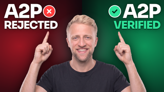
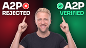
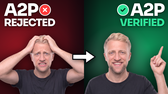
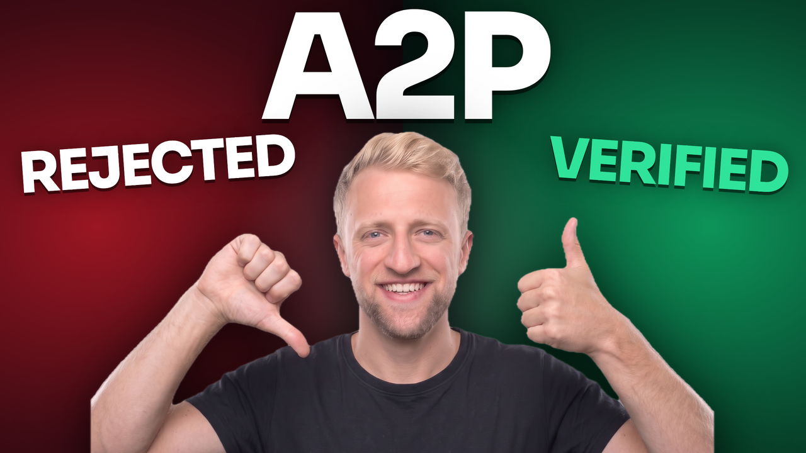
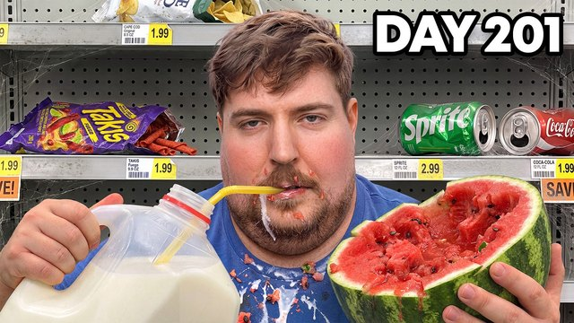
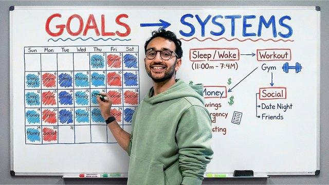
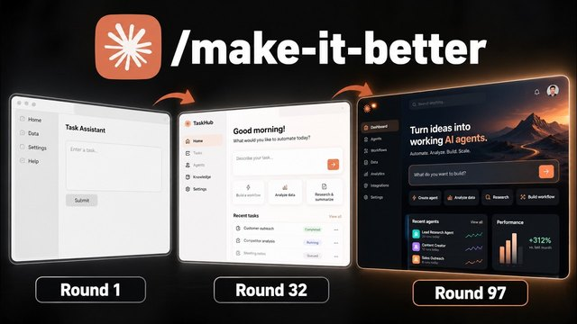
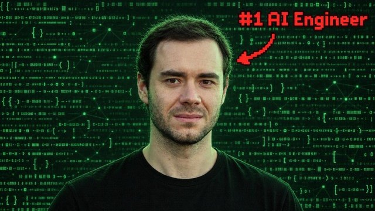
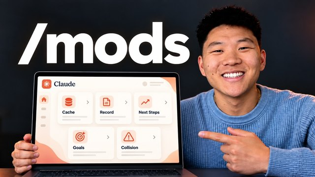
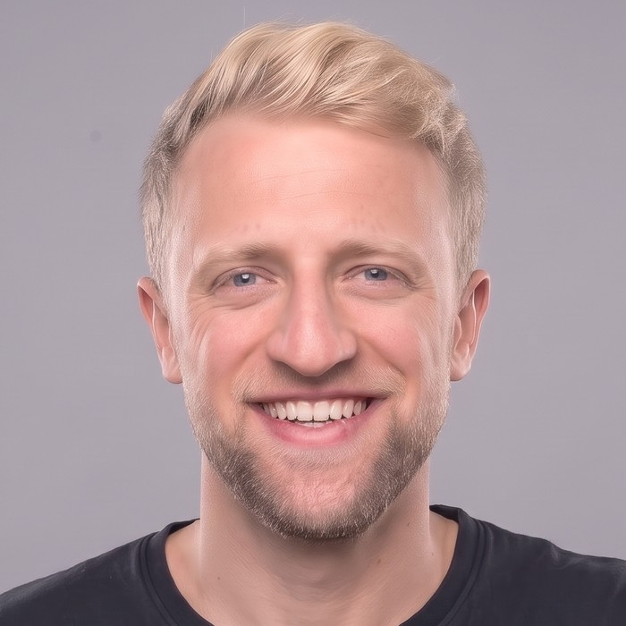

A2P thumbnails, version 6: one face, no glow
Wed Nov 25. Two changes from your feedback. One: there is now ONE master face (the one you picked, P6) and it sits on every pose, pixel for pixel. Two: the neon outline around your body is gone; you now stand out through a soft shadow and a soft light behind you. Same four layouts, A2P up top.
My pick1. A2P Rejected, A2P Verified, pointing up (your wording)



search size and sidebar sizeA2P REJECTED VERIFIED
Download thumbnail 12. Two of you, before and after (the stressed side is the one adjusted expression, made from your master face)

search size and sidebar sizeA2P REJECTED VERIFIED
Download thumbnail 23. A2P on top, thumb down and thumb up

 search size and sidebar size
search size and sidebar sizeA2P REJECTED VERIFIED
Download thumbnail 34. Pointing up at A2P


 search size and sidebar size
search size and sidebar sizeA2P REJECTED VERIFIED
Download thumbnail 4What the top creators do, and what we took
1. MrBeast (his last 40 videos, added to the ledger today). His third best is a before and after: two halves in two colours, him twice, a white arrow, one short label per side. His best 8 all show one story in one picture with 0 to 2 words and a strong feeling on the face. His worst 4 are calm group shots with no tension. Taken into version 2 (two of you).



2. Top business creators: a before and an after in one frame is the single best thumbnail of Dan Martell and Ali Abdaal and the third best of Nate Herk. It wins when the two labels are short and concrete; it lost for Ravi Abuvala and Iman Gadzhi with vague labels. Ours: REJECTED and VERIFIED, one word each.



3. Nick Saraev: his best thumbnails put him in the centre with 2 to 4 very large words. All of his 10 best carry 4 words or fewer; 7 of his 10 worst have no words at all. So the keyword has to be large and up where it reads, which is why A2P left your chest.


4. One caution on pointing: in 140 hand-checked thumbnails of the top business creators nobody points with a finger; Nate Herk does in 2 (1.9x each), and 6 of 16 thumbnails in the A2P niche do. MrBeast's best 8 do not point either. Pointing is a niche habit, not a top creator habit. Versions 2 and 3 carry your idea without a pointing finger, so the YouTube test can tell us.

Your one face
Every pose above carries this same face, pixel for pixel. A different expression is made from it as an adjustment, never kept as a second face.

